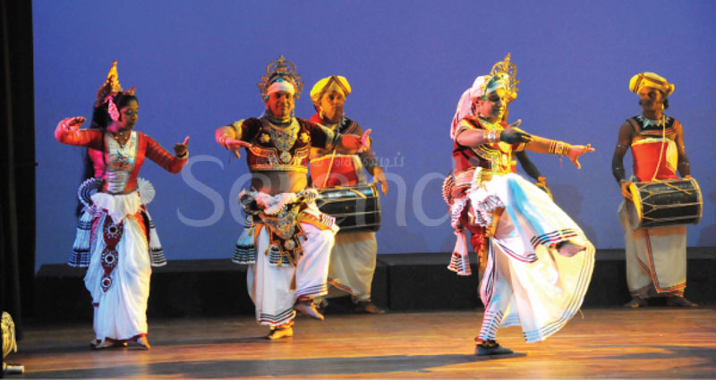

Sabaragamuwa Dance
Sabaragamuwa dance is one of Sri Lanka's three main dance traditions, named for its origin in the Sabaragamuwa Province and known for being a combination of both Kandyan and Low-Country styles. It is often performed in Ratnapura, the historical heart of the tradition, and is deeply connected to rituals and worship, particularly of God Saman. This dance form is characterized by its unique blend of graceful movements, drumming, chanting, and elaborate costumes. Ritualistic dances from Sabaragamuwa province, often performed in temples. Movements are symbolic and closely connected to traditional percussion music. The Sabaragamuwa dance tradition originates from the Sabaragamuwa Province, particularly the areas of Ratnapura, Kalawana, Balangoda, and Badulla. This style is deeply connected to religious practices, where performances are often dedicated to God Saman and other deities. It also has roots in ancient healing and exorcism rituals, highlighting its strong spiritual background. One of the distinctive qualities of Sabaragamuwa dance is its fusion of elements from both Kandyan (up-country) and low-country dance forms, resulting in a unique stylistic blend. Performances typically combine chanting, singing of verses, expressive movements, drumming, and dramatic sequences that bring the rituals to life. The Dowla drum plays a central role in creating the rhythm of these dances, supported by the Thammettama to enhance the musical texture. Costumes are another notable feature; dancers wear specially designed outfits with decorative chest pieces and an ornate headdress, while still reflecting influences from other Sri Lankan dance traditions. Several specific forms exist within the Sabaragamuwa style, including Sindu mathra, Gaman mathra, Yakpada mathra, and Patu-thala mathra, each with its own rhythmic and ritual significance. Although this dance form carries immense cultural and historical value, it is not as widely celebrated as the Kandyan or low-country traditions and is often less visible in major festivals. |
 |
Learn Sri Lankan Sabaragamuwa Dance from experienced teachers
Explore Sri Lankan Sabaragamuwa Dance in depth and learn from experienced teachers & Book a class to experience the beauty of these dances.